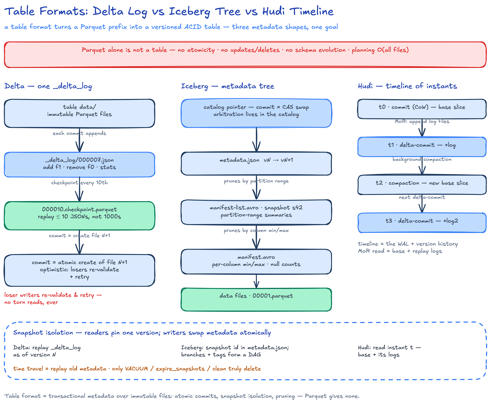
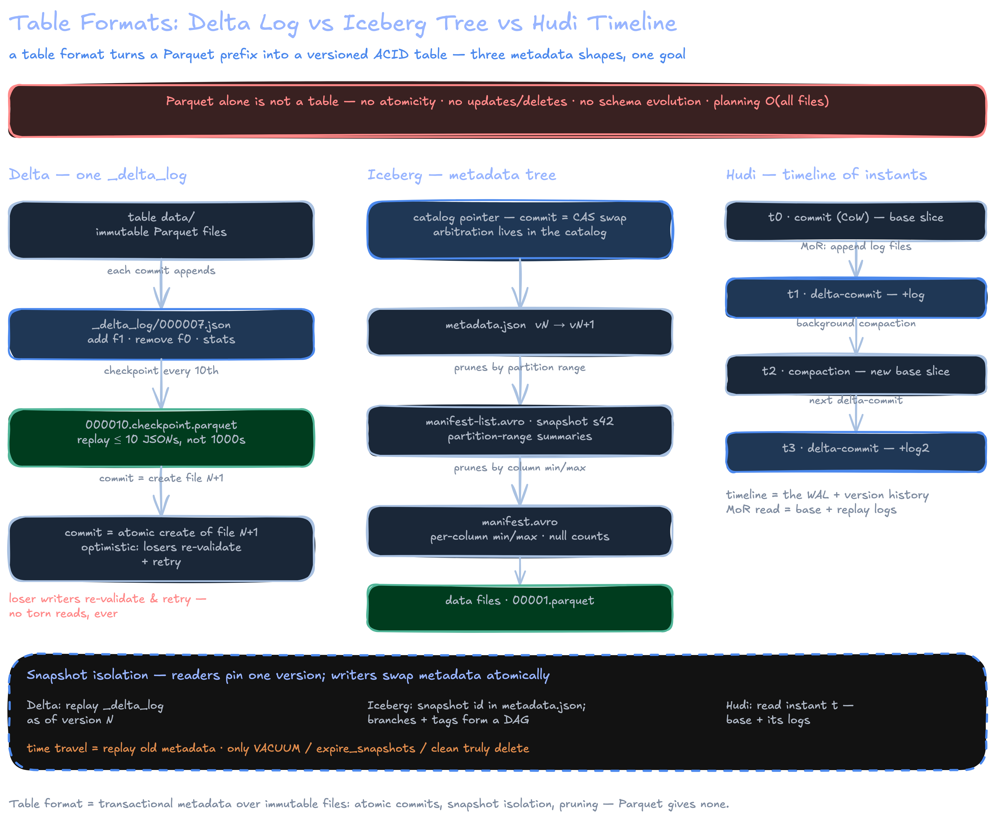

Table Formats: Delta Lake vs Iceberg vs Hudi
A table format is a transactional metadata layer over Parquet/ORC files that turns an object-storage prefix into a versioned ACID table — same goal, three different metadata structures.


Why Parquet Alone Is Not Enough
- Parquet is a file format — it says nothing about the collection of files that form a table.
- No atomicity/isolation — multi-file commits crash into half-states; S3/GCS/Azure have no atomic directory rename, and readers listing mid-write see torn state.
- No updates/deletes — files are immutable; row-level changes mean whole-file rewrites with no invalidation protocol.
- No schema/partition evolution — repartitioning = full rewrite or broken readers.
- Planning is O(all files) — engines list directories and read footers; millions of files dominate query latency.
Delta Lake: One Transaction Log
- Whole architecture =
_delta_log/: each commit appends000...N.jsonwith atomic actions —add(data file + stats),remove,metaData,txn(idempotent streaming),commitInfo. - Checkpoint every 10th commit (
000...10.parquet) — readers replay ≤10 JSONs instead of thousands; current state = deterministic replay of the log. - Writers use optimistic concurrency: attempt commit by creating file N+1; conditional put / catalog conflict manager arbitrates; losers re-validate against new state and retry.
- Deletes: copy-on-write historically; since Delta 2.x, Deletion Vectors (Roaring bitmaps as side files, referenced from
addactions) makeDELETE/MERGEmetadata + bitmap only (delta.io). - Liquid clustering (GA DBR 15.4+) supersedes
ZORDER; time travel viaVERSION AS OF, retention viaVACUUM+logRetentionDuration. - Ecosystem: Linux-Foundation-governed (2019 announcement); delta-rs powers Python
deltalake, Polars, DuckDB's Delta extension (DuckDB docs); UniForm exposes a Delta table as Iceberg — same Parquet, generated metadata (Databricks docs).
Apache Iceberg: A Metadata Tree and a Catalog
- Commit = catalog pointer swap: write new manifests +
metadata.jsonvN+1, then CAS the catalog entry. Arbitration lives in the catalog, not on storage. - Planning is O(pruned metadata): manifest lists carry partition-range summaries; manifests carry per-column min/max/null counts — data files pruned before any I/O.
- Hidden partitioning: transforms (
days(ts),bucket(16, user_id)) live in the spec; engines never hand-write partition filters, and partition evolution is metadata-only — old files stay queryable under their old spec (docs). - Snapshots form a DAG — branches and tags for audit and backfills. v3 (finalized 2025): DV bitmaps,
variant, row lineage (spec); REST catalog (spec) decouples engines from catalogs (Polaris/Open Catalog, Unity, Nessie), vending short-lived storage credentials.
Apache Hudi: Timeline, File Groups, and MoR/CoW
- Models the table as an LSM-style log (tech spec): a timeline of instants —
commit(CoW),delta-commit(MoR),compaction,clean,rollback,replacecommit(clustering). The timeline is the WAL and the version history. - File groups / slices: records keyed by
record key+precombine; a file group owns a key range; a slice = base Parquet + zero or more log files. - CoW: upserts rewrite affected base files — compact reads, expensive writes. MoR: writes append to logs; readers merge base+logs; background compaction (scheduled separately — key for Flink) folds logs into new bases. Small-file sizing built into writers; clustering runs inline or async.
Timeline: [t0 commit][t1 delta-commit][t2 compaction][t3 delta-commit]
File grp1: |-- slice t0: base.parquet --|
|-- slice t2: base.parquet + log + log2 --|
MoR read = base + replay logs | read-optimized = base only
CoW: no logs exist; every upsert rewrites the base file
Deletes: Four Strategies
| Strategy | Formats | Write cost | Read cost |
|---|---|---|---|
| CoW rewrite | Delta (legacy), Hudi CoW | High — rewrite files | None |
| Position deletes | Iceberg v2 | Low — (file, pos) delete files |
Merge at scan |
| Deletion vectors | Delta 2.x, Iceberg v3 | Lowest — bitmap in metadata | Bitmap filter at scan |
| MoR log record | Hudi MoR | Lowest — append to log | Merge until compaction |
Worked Example: One UPDATE, Then Time Travel
orders: 100M rows, 1,000 files of 100k rows, partitioned by order_date — 10 files (~100 MB) per day.
UPDATE orders SET status = 'void' WHERE order_date = '2026-10-01' AND amount > 5000; -- 400 rows, 10 files
SELECT count(*) FROM orders VERSION AS OF 1041; -- the 400 rows reappear
| Format | Commit writes | Volume |
|---|---|---|
| Delta | 1 log JSON + 10 DV bitmaps on existing add entries |
~KBs |
| Iceberg v3 | snapshot s42: manifest list + manifests referencing DVs; catalog pointer swap | ~KBs |
| Hudi CoW | 10 base files rewritten as new slices under instant t42 | ~100 MB |
| Hudi MoR | 400 change records appended to log files, delta-commit t42 | ~50 KB |
Time travel replays the old log / old snapshot / old slices, so the 400 rows reappear. Only VACUUM / expire_snapshots / clean actually delete the files.
Feature Comparison
| Dimension | Delta Lake | Iceberg | Hudi |
|---|---|---|---|
| Metadata unit | _delta_log JSON + Parquet checkpoints |
Catalog pointer → metadata.json → manifest list → manifests | Timeline instants (Avro) |
| ACID mechanism | Optimistic; log-based conflict manager | Optimistic; catalog CAS | MVCC on timeline; non-blocking compaction |
| Partition evolution | REPLACE-ish; liquid clustering mitigates |
Metadata-only, multi-spec coexistence | Via replacecommit, heavier |
| Hidden partitioning | No (explicit partition cols) | Yes — transforms in spec | Keyed buckets, not transforms |
| Incremental/CDC reads | table_changes (CDF) |
Incremental scans; v3 row lineage | CDF + read.incremental, strongest |
| Interop | UniForm (Delta→Iceberg), XTable | REST catalog lingua franca; XTable | XTable sync (docs) |
UniForm and XTable translate metadata only — the translated copy is read-mostly. Keep writes on the source format and re-sync; one copy of Parquet serves many engines (xtable.apache.org).
Engine Matrix (2025–26)
| Engine | Delta | Iceberg | Hudi |
|---|---|---|---|
| Spark | ✅/✅ first-class | ✅/✅ reference impl | ✅/✅ first-class |
| Flink | ⚠️ connector unmaintained | ✅/✅ | ✅/✅ strongest |
| Snowflake | ✅ read | ✅/✅ managed + Polaris (docs) | ❌ |
| Databricks | ✅/✅ native | ✅/✅ managed, GA in Unity | ⚠️ via XTable |
| BigQuery | ✅ read | ✅/✅ BigLake | ❌ |
| DuckDB | ✅/✅ delta ext | ✅ read, ✅ via REST attach (catalogs) | ❌ |
| Python/Polars | ✅/✅ delta-rs | ✅/✅ PyIceberg | ⚠️ |
Decision Table: When Each Wins
| Situation | Pick | Why |
|---|---|---|
| Multi-engine estate, vendor neutrality | Iceberg | REST catalog + universal engine support |
| All-in Databricks / Spark-centric | Delta | Deepest integration; UniForm covers Iceberg readers |
| Keyed CDC, upsert-heavy, near-real-time | Hudi | Record index, MoR logs, decoupled compaction |
| Share with Snowflake/BigQuery/Athena | Iceberg | Native managed-table support everywhere |
Use cases:
- GDPR deletes → DVs (Delta/Iceberg v3) for cheap compliance deletes; MoR logs for delete-heavy streaming; CoW only for tiny tables.
- CDC upserts → Hudi (record index + MoR); Delta MERGE + DVs acceptable; Iceberg v2 equality deletes get expensive at high key cardinality.
- Multi-engine org → Iceberg behind a REST catalog; Delta + UniForm if Databricks is the writer.
Every vendor publishes one where they win. Hudi's own 2026 post: no single benchmark settles Hudi-vs-Iceberg (blog). Workload shape, compaction discipline, DV settings, and catalog latency flip results — operational differences usually outweigh format differences. Benchmark on your own data.
Key Takeaways
- Table format = transactional metadata over immutable columnar files: atomic commits, snapshot isolation, evolution, pruning — none of which Parquet provides.
- Delta is a log (
_delta_log+ checkpoints, pointer-swap commits); Iceberg is a tree (catalog → metadata.json → manifests, pruning summaries at every level); Hudi is a timeline over file groups with MoR/CoW duality and first-class indexes. - Iceberg v3 + REST catalog (Polaris, Unity) made Iceberg the interop standard; Delta counters with UniForm, Hudi with XTable.
- Benchmarks are vendor-shaped; workload shape and maintenance discipline dominate format choice.
Interview Lens
- Expect "draw the Iceberg metadata tree" or "walk me through a Delta commit" — know what each layer prunes and where the atomic swap happens (catalog CAS vs log file creation).
- Explain hidden partitioning with the failure it prevents (Hive-style partition-column filter bugs) and why partition evolution needs no rewrite (specs attach per-file).
- The delete question is a trap ladder: CoW → position deletes → DVs → MoR logs; name write-vs-read cost at each rung.